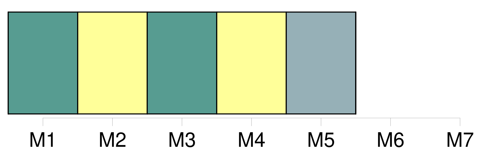
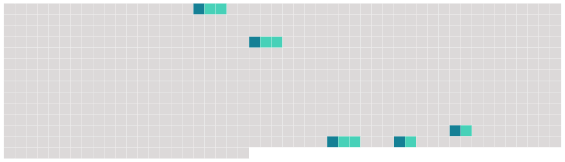

Longueur nb maillons : 5 mentions |
 |
121 Les principales hypothèses sur la fonction des zébrures concerneraient 124 le camouflage, 118 l'évasion [face aux prédateurs] , la thermorégulation et 123 les interactions sociales ; toutefois, selon 125 une étude multifactorielle publiée en 126 2013, rien ne vient étayer de 127 manière convaincante 130 128 l'une ou 129 l'autre de 131 ces hypothèses. [4 phrases] Les rayures auraient aussi 141 un effet stroboscopique [sur les prédateurs] [10 phrases]
209 207 Comportement et 208 [écologiePrédateurs] |
 |
Il est possible de télécharger la ressource sur la page Ortolang |
Si vous avez des questions ou vous voyez des erreurs, merci d'envoyer un mail à silvia.federzoni89@gmail.com |